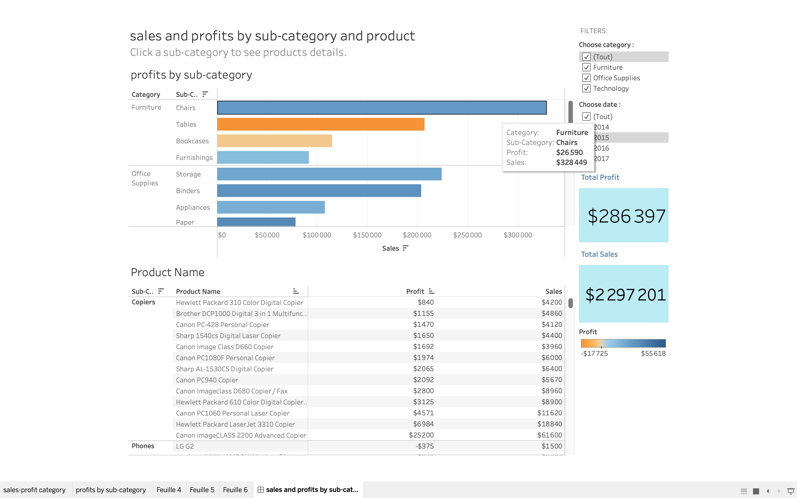

Exemple
The provided dashboard exemplifies a concentration on sales, profit margins, and sales volumes. Additionally, there are multiple filters (Year,category and sab-category) to gain more insights .
The provided dashboard exemplifies a concentration on sales, profit margins, and sales volumes. Additionally, there are multiple filters (Year,category and sab-category) to gain more insights .
The primary function of a dashboard is to offer a quick overview of key performance indicators (KPIs) and outcomes. Dashboards provide an interactive means of assessing the performance of a company or project.
Typically, creating a dashboard requires a time frame ranging from 2 weeks to 2 months. This development process encompasses two key phases:
These two phases together constitute the development timeline for a dashboard project.
Through the utilization of dashboards, you can effortlessly uncover valuable insights. You have the ability to apply filters and explore various graphs, enabling you to access the pertinent information promptly and facilitating informed decision-making.
